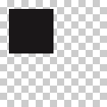

background
background(r, g, b, a=1.0)
background(h, s, b, a=1.0)
background(c, m, y, k, a=1.0)
background(k, a=1.0)
background(color)
background(None)
Sets the PDF background color. This command works exactly like the fill() or stroke() command. You can use it to set the PDF background to transparent by supplying None as parameter (so it imports more easily in Photoshop).
 |
background(None)
rect(10, 10, 50, 50) |
the current background color